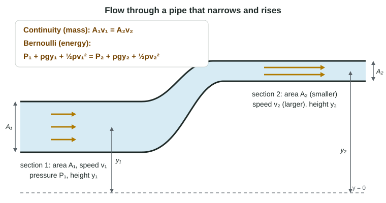

Fluids and Conservation Laws
For an ideal fluid in a full pipe, continuity (A₁v₁ = A₂v₂, mass conservation) sets the speeds and Bernoulli's equation (energy conservation per volume) then sets the pressures; faster flow at the same height means lower pressure, and a hole a depth h down gives v = √(2gh).
Part 1 · Hook
Why this matters
Part 2 · Before you start
What this builds on
Part 3 · Prerequisite check
Quick check before you start
1. For a system with no friction, which is constant?
- K + U
- K alone
- U alone
- The speed
Show the answer
Mechanical energy K + U is constant when no nonconservative work is done.
- Correct: K + U:
- K alone:
- U alone:
- The speed:
2. What is the gauge pressure 2.0 m below the surface of water (ρ = 1000 kg/m³, g = 9.8 m/s²)?
- 1.96 × 10⁴ Pa
- 2.0 × 10³ Pa
- 1.2 × 10⁵ Pa
- 9.8 × 10³ Pa
Show the answer
P_gauge = ρgh = (1000)(9.8)(2.0) Pa.
- Correct: 1.96 × 10⁴ Pa:
- 2.0 × 10³ Pa:
- 1.2 × 10⁵ Pa:
- 9.8 × 10³ Pa:
3. An ideal fluid is
- incompressible and nonviscous
- compressible and sticky
- always at rest
- a gas at low pressure
Show the answer
Constant density and no internal friction.
- Correct: incompressible and nonviscous:
- compressible and sticky:
- always at rest:
- a gas at low pressure:
Part 4 · See it
See it first

Part 5 · Step by step
How it works, step by step
- An ideal fluid is incompressible and fills the pipethe volume entering each second equals the volume leaving: A₁v₁ = A₂v₂
- The pipe narrowsthe fluid must move faster there (continuity sets the speed)
- Speeding up needs a net force along the flowthe pressure is lower where the fluid moves faster, at the same height
- Energy per unit volume is conserved in an ideal fluidP + ρgy + ½ρv² is the same at every point along the flow (Bernoulli)
Part 6 · Key ideas
Key ideas
- Volume flow rate is Av, in m³/s. For an ideal fluid in a full pipe it is the same everywhere: A₁v₁ = A₂v₂ (continuity, from conservation of mass).
- Continuity sets the speed: a quarter of the area gives four times the speed. Use it first.
- Bernoulli: P₁ + ρgy₁ + ½ρv₁² = P₂ + ρgy₂ + ½ρv₂², conservation of energy per volume. At equal heights, faster flow means lower pressure.
- Torricelli: fluid leaves a small hole a depth h below an open surface at v = √(2gh), the speed of a drop falling h.
Part 7 · Misconception
A common mistake
The wrong idea: Where a pipe narrows, the water is squeezed, so its pressure goes up.
What actually happens: The water speeds up into the narrow part, and something must push it to speed up: the higher pressure behind it. In a horizontal pipe the narrow, fast section has the lower pressure.
Part 8 · Check yourself
Check yourself
Exam-style questions. Anything you miss goes into your review queue.
Data table
Water in a narrowing pipe
Water (ρ = 1000 kg/m³) flows steadily through a horizontal pipe that narrows from section 1 to section 2. The pipe is full and the water is an ideal fluid.
| Section | Area (m²) | Speed (m/s) | Absolute pressure (Pa) |
|---|---|---|---|
| 1 | 4.0 × 10⁻³ | 1.5 | 2.00 × 10⁵ |
| 2 | 1.0 × 10⁻³ | ? | ? |
1. What is the volume flow rate of the water? Give the value and its unit.
Type a number and its unit.
Show the answer
Volume flow rate = A₁v₁ = (4.0 × 10⁻³ m²)(1.5 m/s) = 6.0 × 10⁻³ m³/s, six liters each second. It is the same at every section of the pipe.
- Answer: 0.0060 m^3/s
2. What is the speed of the water at section 2? Give the value and its unit.
Type a number and its unit.
Show the answer
Continuity: A₁v₁ = A₂v₂, so v₂ = (4.0 × 10⁻³ m²)(1.5 m/s)/(1.0 × 10⁻³ m²) = 6.0 m/s. A quarter of the area, four times the speed.
- Answer: 6.0 m/s
3. What is the absolute pressure at section 2? Give the value and its unit.
Type a number and its unit.
Show the answer
Bernoulli with y₁ = y₂ (horizontal pipe): P₁ + ½ρv₁² = P₂ + ½ρv₂². P₂ = 2.00 × 10⁵ Pa + ½(1000 kg/m³)[(1.5 m/s)² − (6.0 m/s)²] = 2.00 × 10⁵ Pa − 1.69 × 10⁴ Pa = 1.83 × 10⁵ Pa.
- Answer: 1.83 × 105 Pa
4. A student predicts that the pressure is higher at section 2 because the water is squeezed into a narrower pipe. Which response is correct?
- The pressure is lower at section 2, because the water speeds up and is pushed from behind
- The pressure is higher at section 2, because the narrow walls push in on the water
- The pressure is the same at both sections, because the water is incompressible
- The pressure is higher at section 2, because the same flow rate passes through less area
Show the answer
Water speeds up from section 1 to section 2, so it gains kinetic energy. A net force must act on it in the direction of flow, which means the pressure behind it (section 1) is larger than the pressure ahead (section 2).
- Correct: The pressure is lower at section 2, because the water speeds up and is pushed from behind: Right: faster flow, lower pressure in a horizontal pipe.
- The pressure is higher at section 2, because the narrow walls push in on the water: This "squeezing" picture is the classic error; the water accelerates into the narrow part, so the pressure there is lower.
- The pressure is the same at both sections, because the water is incompressible: Incompressible means constant density, not constant pressure.
- The pressure is higher at section 2, because the same flow rate passes through less area: The same flow rate through less area means higher speed, which goes with lower pressure.
5. Which principle sets the speed at section 2, and which sets the pressure there?
- Continuity sets the speed; Bernoulli then sets the pressure
- Bernoulli sets the speed; continuity then sets the pressure
- Bernoulli alone sets both, with no need for continuity
- Continuity alone sets both, because the pipe is horizontal
Show the answer
The volume flowing in each second must flow out (an incompressible fluid cannot pile up), so A₁v₁ = A₂v₂ gives v₂ from the areas alone. Bernoulli, an energy statement, then turns the speed change into a pressure change.
- Correct: Continuity sets the speed; Bernoulli then sets the pressure: Right: geometry and continuity first, then energy.
- Bernoulli sets the speed; continuity then sets the pressure: Bernoulli has two unknowns here (P₂ and v₂); continuity has to supply the speed.
- Bernoulli alone sets both, with no need for continuity: One equation cannot give two unknowns.
- Continuity alone sets both, because the pipe is horizontal: Continuity says nothing about pressure.
6. You put your thumb over part of the end of a garden hose, and the water sprays out faster. Why?
- The same volume per second leaves through a smaller area
- Your thumb adds energy to the water as it squeezes past
- The pressure in the jet rises under your thumb, which pushes the water out faster
- Water is compressed under your thumb and expands as it leaves
Show the answer
The supply pushes water through at about the same volume flow rate. Continuity, Av = constant, means a smaller opening needs a larger speed.
- Correct: The same volume per second leaves through a smaller area: Right: continuity.
- Your thumb adds energy to the water as it squeezes past: Your thumb is at rest, so it does no work on the water.
- The pressure in the jet rises under your thumb, which pushes the water out faster: This is the "squeezed water has higher pressure" error. Once it leaves, the jet is at atmospheric pressure; it is faster because the same flow passes a smaller opening.
- Water is compressed under your thumb and expands as it leaves: Water is nearly incompressible; continuity, not compression, explains the jet.
Part 9 · Summary
Summary
Part 10 · Up next
What comes next
This is the last topic in the course.
Part 11 · Connections